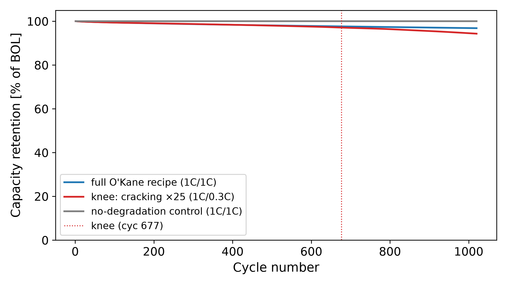
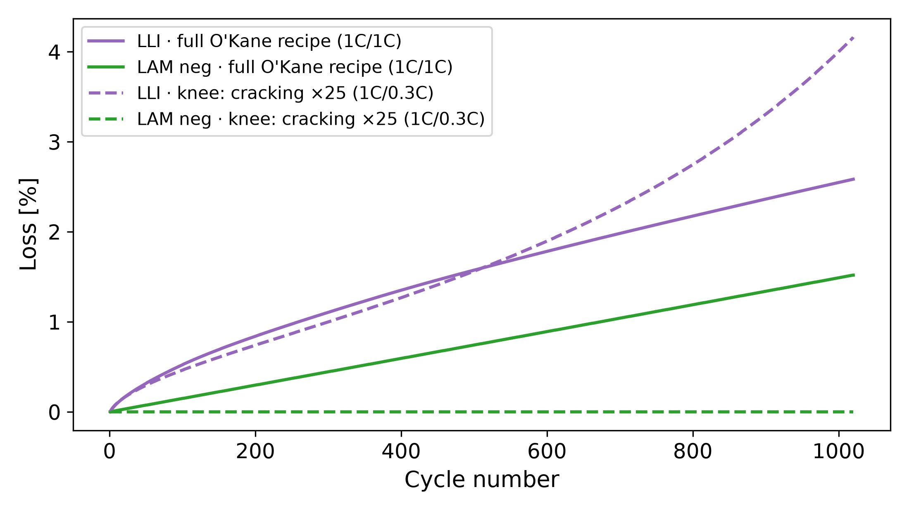
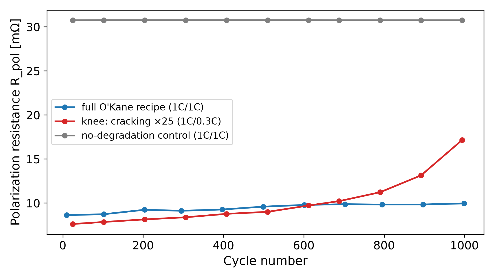
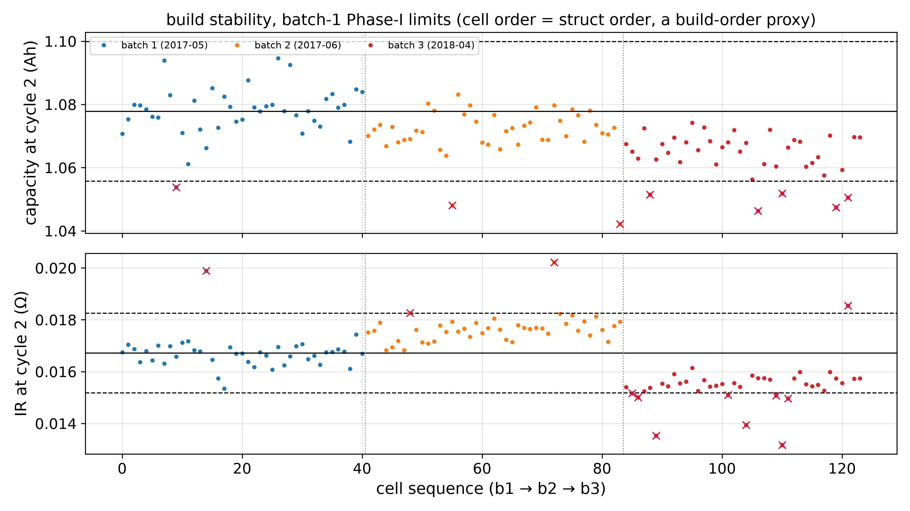
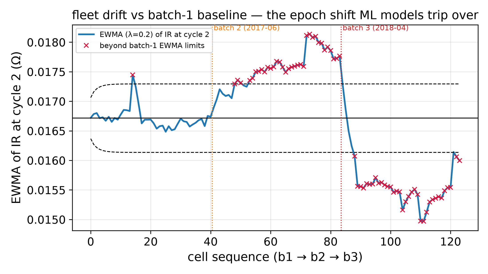
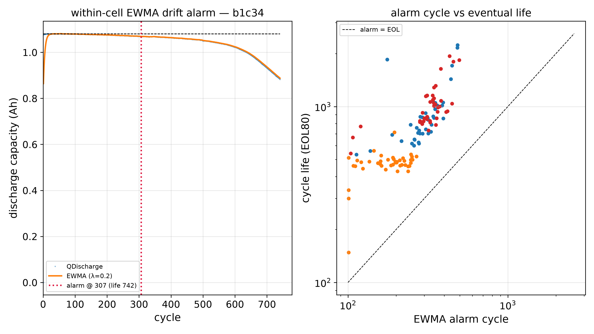

A design FMEA, a process FMEA, and an out-of-control action plan, worked to the AIAG-VDA standard and tied together as one failure network cut at three levels: what can go wrong in the cell (DFMEA), the line that builds it (PFMEA), and what monitoring those modes looks like on a real fleet (OCAP). Every rating and signal traces to an open physics simulation or public data — the same PyBaMM model and Severson fleet used elsewhere on this site.
A DFMEA and a PFMEA are not two lists — they are the same failure network cut at two levels, and the OCAP is the monitoring layer that catches what escapes. Two method choices carry the weight: Action Priority (AP) replaces the discredited multiplicative RPN — severity is weighed first, so a severity-9 safety mode with modest occurrence is never buried under a high-RPN efficiency mode. And the DFMEA is built on a physics simulation, which makes the FMEA's weakest column — Occurrence — auditable: every failure mode's rate is observable in the simulated trajectories, and mechanism-ablation configs play the role of prevention-control experiments.
Degradation-mechanism design modes on a simulated NMC811‖graphite cell; Occurrence read from physics.
↓PGeneric assembly process modes that enable the design modes; linkage stated explicitly.
↓OPre-agreed responses to real SPC alarms on a public fleet; an alarm triggers a procedure, not a debate.
Action Priority key:
H high — act first (severity-led) ·
M medium — action needed ·
L low — as-resources-allow. Failure-mode IDs (DM-xx, OP-xx) are local to this demonstration.
Excerpt of the failure-mode register. Each row's Occurrence and Detection basis is an observable in the physics simulation — the panels below are the evidence the ratings are read from.
| ID | Failure mode (mechanism) | Effect | S | O | D | AP | Rating basis (simulation / public evidence) |
|---|---|---|---|---|---|---|---|
| DM-01 | Continuous SEI growth (solvent-diffusion limited) | Gradual lithium-inventory loss; fade to ~96.8% at 1000 cycles (base) | 6 | 8 | 2 | M | Active in every config — inherent chemistry, no design removes it; detected by routine capacity trending. |
| DM-02 | Particle cracking → SEI on fresh surfaces → accelerating LLI → knee | Fade accelerates 2.16× at cycle 677; life prediction breaks at the knee | 7 | 6 | 3 | M | Deterministic in the cracking-accelerated corner; the impedance signature warns before the capacity knee. |
| DM-03 | Lithium plating during charge | LLI + dead Li; internal-short escalation path | 9 | 4 | 4 | H | Safety-relevant; not dominant at this 1C/RT sim, but it is the accepted knee mechanism of the public Severson LFP fleet — rate is protocol-dependent. |
| DM-05 | Polarization-resistance growth | Power-capability fade (Rpol 7.6→17.1 mΩ, knee config) | 6 | 7 | 2 | M | Tracked by checkpoint EIS → DRT; accelerating pre-knee signature is the impedance analogue of the capacity knee. |
PUBLIC SIM The one H row (DM-03) is the headline AP is built to surface: severity-9 with a protocol-dependent occurrence — under multiplicative RPN it would score lower than DM-02. Full register runs DM-01…DM-05.



The process register for a generic stacked-pouch assembly line — Rev B: 11 operations, 19 failure modes. The right-hand linkage column is the point of the exercise: where a process mode's worst effect is "it hands a design mode a head start", it says so explicitly — and the OP40a case study below walks one escape end-to-end, from calender drift to a physics-quantified in-service knee.
| OP | Operation | Primary product characteristic |
|---|---|---|
| OP10 | Slurry mixing | Homogeneity (viscosity, solids, fineness) |
| OP20 | Coating | Areal-loading uniformity; defect-free surface |
| OP30 | Drying | Residual solvent / moisture; binder distribution |
| OP40 | Calendering | Porosity / density; particle integrity |
| OP50 | Slitting / notching | Edge quality (burr height); dimensions |
| OP60 | Stacking & separator | Alignment / overhang margins; cleanliness |
| OP70 | Tab welding | Weld strength; spatter-free joints |
| OP80 | Electrolyte fill | Fill mass; complete wetting; moisture exclusion |
| OP90 | Formation | First-SEI quality (protocol fidelity) |
| OP95 | Degas & final seal | Gas removal; seal integrity |
| OP100 | Aging & EOL test | Escape screening (OCV retention); grading |
| OP | Failure mode | Effect (worst perspective) | S | O | D | AP | DFMEA link |
|---|---|---|---|---|---|---|---|
| OP10a | Binder / additive maldistribution | Adhesion & resistance variation; early fade | 6 | 4 | 4 | L | accelerates DM-05 |
| OP20a | Areal-loading variation | Local N/P imbalance → plating risk at end user | 8 | 4 | 2 | M | enables DM-03 |
| OP30b | Binder migration (over-fast drying) | Delamination → active-material loss | 6 | 4 | 5 | L | accelerates DM-04 |
| OP40a ★ | Over-compaction → particle micro-cracking | Crack-growth head start → early accelerating-fade knee (case study ↓) | 7 | 4 | 3 | M | head start for DM-02 |
| OP50a | Slitting burrs above spec | Separator puncture → internal short at end user | 9 | 4 | 4 | H | escalates like DM-03 worst case |
| OP60b | Foreign-particle / separator wrinkle | Local pressure point → latent internal short | 9 | 3 | 4 | L | latent DM-03-class hazard |
| OP80a | Electrolyte underfill / poor wetting | Dry spots → local current focusing, early fade | 7 | 4 | 5 | M | accelerates DM-05 |
| OP100a | Soft-short escapes aging screen | Field self-discharge / latent short | 8 | 3 | 3 | L | residual DM-03-class risk |
GENERIC PROCESS Across all 19 modes: one H (OP50a), four M, fourteen L. The teaching row OP60b — severity 9 but rare, with credible detection — lands L under the AP table: severity-first does not mean "9 is always urgent", which is exactly where AP differs from RPN. Content is textbook only, by design.
One process escape, followed from cause to a physics-quantified consequence and a verification plan — the DFMEA's quantified discipline applied to a process mode, anchored entirely to public simulation and open data.
| Step | Content |
|---|---|
| Failure chain | Calender roll-gap drifts low → electrode compacted past porosity spec, particles carry micro-cracks → in service each crack exposes fresh surface that re-consumes lithium as new SEI → an accelerating-LLI capacity knee. |
| Severity · S=7 | Quantified by public sim: cracking-accelerated fade accelerates 2.16× at cycle 677, ends 94.3% vs 96.8% graceful — and, worse than the retention delta, the knee breaks life predictability. Loss of predictable primary-function life, no safety dimension → S=7. |
| Occurrence · O=4 | Cause is calibration drift on a maintained parameter; prevention (calibration schedule) exists but is time-based, not closed-loop → moderately effective → O=4. |
| Detection · D=3 | Porosity + thickness measured per roll — quantitative and upstream of cell build, but sampled, not 100% → D=3. |
| Action Priority | S7 · O4 · D3 → M per the AIAG-VDA table — an obligation to identify improvement actions. |
| Recommended action | Type | Rating move | AP after |
|---|---|---|---|
| Closed-loop roll-gap control + inline pressure/gap monitoring | Prevention | O 4 → 3 | — |
| Inline density proxy at 100% coverage | Detection | D 3 → 2 | — |
| Combined | — | S7 · O3 · D2 | L |
Verification (all-public demonstration). The acceptance criterion for the fix is no fade-rate knee within the mission window: the cracking-accelerated config fails it (knee at cycle 677; Rpol grows 7.6→17.1 mΩ, accelerating), the base config passes (96.8%, graceful) — a process fix must move the article from the failing trajectory class to the passing one. Fleet-level guard: build-to-build drift surfaces in early-cycle features long before field failures — OCAP Case A shows a +3.1σ shift in the public Severson fleet.
An out-of-control action plan turns a chart signal into a pre-agreed procedure. Every signal below is real, computed by an open pipeline on the public Severson 2019 fleet (124 LFP/graphite cells, also analyzed here). The generic flow is the same for every alarm; the cases show it applied.
Pipeline flags the rule hit at ingest — the alarm is data, not blame.
Quarantine articles / freeze affected decisions (including model deployment).
Walk the pre-agreed path: measurement system first, process second, physics third.
Name and fix the assignable cause / re-baseline with a documented reason / escalate to FA.
Pre-defined release criteria met; downstream consumers notified.

Because the drifting quantity is the model's input feature, the pre-agreed containment is to freeze naive reuse of the batch-1 model on later builds — the documented reason published models degrade on batch 3. Disposition: re-baseline limits per batch, add batch as a covariate, never silently pool drifted builds. Method lesson: run SPC on features, not only on product metrics — a model is a consumer of the process, and its inputs deserve control charts.


The pre-agreed response class here is prognostic, not quarantine: no line is stopped — the article is scheduled for derating / replacement per its predicted remaining life. The standing rule the case demonstrates: process-OCAP and article-health-OCAP are different response classes; conflating them either stops lines for physics or ignores real process faults. The whole loop — signal → response → record → limit update — is a FRACAS in miniature, shown end-to-end on open data.
So what? The reliability toolkit only earns trust when its weakest column is made auditable and its documents actually connect. Here Occurrence is read from physics, not guessed; Action Priority puts the severity-9 safety mode where it belongs; and DFMEA → PFMEA → OCAP form one traceable chain from a design mechanism, to the process step that enables it, to the control-chart response that catches it on a real fleet. That is the difference between an FMEA as a compliance artifact and an FMEA as an engineering instrument.
Future work: close the loop live — feed OCAP dispositions back into the FMEA Occurrence ratings so the risk model updates itself as field evidence arrives.